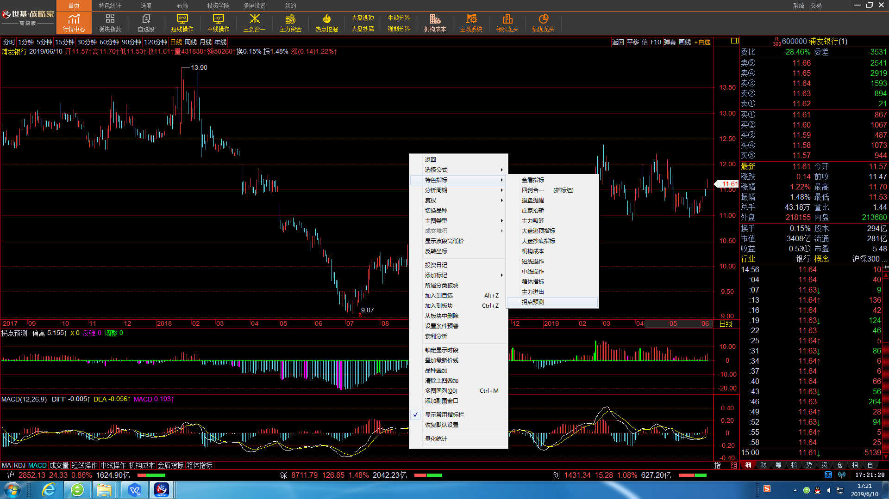

4.6拐点预测
拐点预测功能是蓝黄带股票软件特有的研判大盘第二个交易日走势的特色功能，通过这个指标可以提前预知大盘第二个交易日的大致走势。
说明：
拐点预测指标有5个部分。
1、绿色的柱状图为大盘明日调整信号，出现这个信号大盘调整概率大，应该 谨慎操作。
2、紫色的柱状图为大盘明日反弹信号，出现这个信号大盘反弹概率大，应该 积极操作。
3、红色的细柱代表大盘目前是中长期上升趋势（牛熊分界的黄色和红色区域）柱 越大偏离越大，调整或下跌概率就大
4、蓝色的细柱代表大盘目前是中长期下跌趋势（牛熊分界的蓝色和绿色区域）柱 越大偏离越大，反弹和上涨概率就大
5、上方指标名称：偏离：红，蓝细柱的大小。反弹：反弹信号的数值0或者就是 偏离值，出现大于零的数就意味着信号发出。调整：调整信号的数值0或者就 是偏离值，出现大于零的数就意味着信号发出。
使用原则：
1、调整信号出现：
当绿色的调整信号出现的时候，预示大盘明日出现调整的可能性很大，这个时候稳 健的做法是今日尾盘卖掉股票，尽量轻仓。灵活的做法是第二日大盘冲高的过程中 卖掉股票，尽量轻仓。对于手持股票强势上涨的可暂时持有。但无论如何不能在第 二日大盘冲高的过程中买入股票，尤其追涨。
调整信号不是顶部信号，出现这个信号不意味着大盘见顶，它的作用是对我们交易 的一个时机把握，这个信号可以避免高位买进股票，尤其是在大盘特别好的时候， 起到控制风险的作用。调整信号的作用就是一天，如果大盘进行了调整，那么信号 就失效了。再需要判断大盘的调整，就需要等待下个信号。
2、反弹信号出现：
当紫色的反弹信号出现的时候，预示大盘明日出现反弹的可能性很大，这个时候稳 健的做法是今日尾盘买进股票。灵活的做法是第二日大盘下探的过程中买入股票。 对于手持股票这个时候不宜卖出，要等反弹卖出。尤其是第二日的下探过程中，因 为很容易出现卖个地板价。
反弹信号不是底部信号，出现这个信号不意味着大盘见底，它的作用是对我们交易 的一个时机把握，这个信号可以避免低位卖出股票，尤其是在大盘暴跌的时候，起 到尽量提高卖出价格的作用。反弹信号的作用就是一天，如果大盘进行了反弹，那 么信号就失效了。再需要判断大盘的反弹，就需要等待下个信号。
3、连续出现2个以上调整信号：
当连续出现2个或2个以上调整信号的时候，大盘出现下跌的概率很大，并可能会 出现较大幅度的调整，调整压力信号聚集太多的时候大盘下跌可能性会非常大，所 以遇到这种情况要随时注意大盘的风险，这个时候千万别过于贪图大盘的上涨，风 险永远是第一位的。
4、连续出现2个以上反弹信号：
当连续出现2个或2个以上的反弹信号的时候，大盘出现反弹的概率很大，并可能 会出现较大幅度的反弹，反弹的信号聚集的太多的时候上涨的可能性会非常大，所 以遇到这种情况的时候可以积极进入市场做反弹，这个时候要控制的就是恐惧情 绪，当然做反弹本身还是有一定风险的，我们这里所指的交易都是短线交易。
5、下跌趋势中出现调整信号：
大多数情况下调整信号都是出现在上升趋势中的，即红色细柱区域内，但也有在下 跌趋势中出现的调整信号，即蓝色的细柱区域内。当这种调整信号出现的时候，大 盘形成较大调整的概率是非常大的，应该坚决卖出股票，空仓等待大盘下跌。
6、上升趋势中出现反弹信号：
大多数情况下反弹信号都是出现在下跌趋势中的，即蓝色细柱区域内，但也有在上 升趋势中出现的反弹信号，即红色的细柱区域内。当这种反弹信号出现的时候，大 盘形成较大反弹的概率是非常大的，应该坚决买入股票，等待大盘回升，重新走向 上升趋势。
